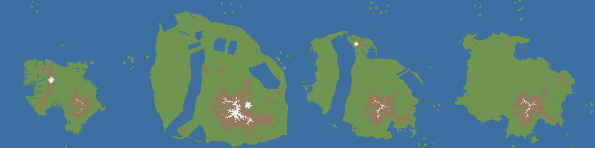
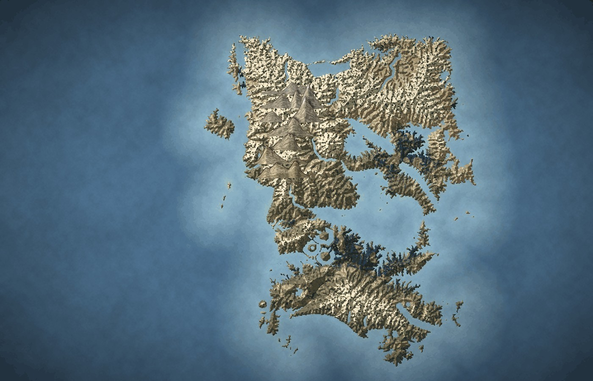
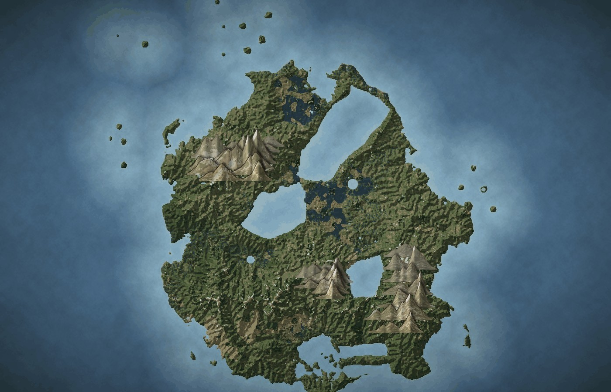

pwgの世界地図10枚とGemini添削の発注文
概要: ユーザー指示(2026-11-18)「段階12を基本に使う。世界地図を10個作り、この方式で絵を作る。Geminiに添削させ、ファンタジー地図として足りないもの・余計なものを整理する。元の絵と発注文を作る」の第1段階です。最初に公開した版は、Azgaarでもpwgでもない私の簡単な生成プログラムの地図でした。ユーザーの指摘(pwgで)を受けて、pwgで作り直した版に差し替えました。(目的: 添削の元になる絵と発注文をそろえるため)
pwgは調整できるか(検証結果)
pwg(手続き的世界生成プログラム、MITライセンス)は、世界の型(10種類)と、陸の割合・大陸の数・島の量・「地図の外」の扱いなどを、指定して作れます。検証として4回作って、数字を測りました。
| 指定 | 陸の割合(実測) | 大きな陸(面積1%以上) | 端の陸の割合 |
|---|---|---|---|
| 群島 | 16% | 1 | 0.5% |
| パンゲア | 55% | 1 | 3.7% |
| 陸30%・大陸2つ・端は海 | 30.2% | 2 | 0.7% |
| 大陸5つ・島1.5倍・陸35% | 35.1% | 1 | 1.1% |

- 陸の割合: 指定どおりに出ました(0.30→30.2%、0.55相当→54.9%)。
- 世界の型: 群島は陸16%で小さな島が散らばり、パンゲアは一つの大きな陸になりました。
- 大陸が端にできる問題: 指定なしで10回作ると、2回が端に約9%の陸ができました。「地図の外」を「海」に指定すると、端の陸の割合は多くが1〜3%台に下がります。ただし保証ではなく、フィヨルドとホットハウスの型で、それぞれ約15%・約10%の陸が端にできた例がありました(別のシードで作り直して除きました)。
- 大陸の数: 指定の効きは弱く、5と指定しても大きな陸は1つでした(つながって1つになる)。
- 前の私の実行は、シードの指定の仕方が誤っていて(アドレスの#の後ろに書いたため無効)、毎回ランダムな世界でした。今回は直しています。
手順(一つずつ)
- 10枚の地図を、下から1枚ずつ長押しして保存する(または、各画像を開いて保存する)。
- Geminiに、10枚を添付し、下の発注文を貼って送る。
- Geminiの返答を、私に貼って渡す。私が、足りないものと余計なものを整理します(次の段階)。
Geminiへの発注文(そのまま貼れます)
添付した10枚の画像は、プログラムで自動生成した「ファンタジー世界の地図」です。1枚ずつ、ファンタジー地図(物語やゲームの舞台となる世界地図)として、添削してください。 【画像の説明】 ・世界の元データは、手続き的世界生成プログラム(Procedural World)で作った標高と地面の種類(生物群系)です。 ・10枚は、世界の型が違います(順番に、1=地球型(標準)、2=陸30%・大陸2つの指定、3=群島、4=一つの大きな大陸(パンゲア)、5=陸45%・大陸3つの指定、6=フィヨルドの寒冷な世界、7=砂漠の世界、8=火山島の列、9=氷河期、10=熱帯(ホットハウス)）。 ・地図に描かれているのは、陸と海の形、地面の色(森・草地・砂漠・岩・雪などの区分)、陰影、海の濃淡、山岳地帯の山の絵だけです。 ・山の絵は、山のまとまった地域だけに、重ねた山並みとして描き、それ以外の陸は絵を描かず、色と陰影だけにしています。 ・左右の余白は、世界が正方形のため、海で埋めています。 ・川、湖の絵、道、国境、都市・町、地名、文字、方位記号、縮尺、凡例、海の装飾は、まだ何も描いていません(意図的に省略)。 【してほしいこと】 1. 10枚それぞれについて、次の3つを、箇条書きで3〜5個ずつ答える。 ・足りないもの(ファンタジー地図として、あったほうがよいもの) ・余計なもの、不自然なもの(なくてよいもの、変なもの) ・良い点 2. 10枚に共通する「足りないもの」と「余計なもの」を、それぞれ重要な順に、理由をつけて整理する。 3. 「足りないもの」を、次の4つに分類して、各分類の中で重要な順に並べる。 ・地形そのもの(海岸線、川、湖、島、半島、地形の変化など) ・絵の描き方(山、森、海、色、質感、陰影など) ・地図の情報(都市、道、国境、地名、方位記号、縮尺、凡例など) ・世界観(ファンタジーらしさを出す要素) 4. 10枚を、ファンタジー地図として「一番良い」から順に並べ、理由を一言ずつ添える。 5. 最後に、「次に直すと一番効果が大きい5つ」を、重要な順に答える。 【守ってほしいこと】 ・「自動生成であること」を前提に、実際に見える内容だけを書く。見えないものを、あるように書かない。 ・ほめるだけの添削にしない。足りないものと余計なものを、遠慮なく具体的に書く。 ・あなたが画像から読み取れないことは、「読み取れない」と書く。 ・日本語で、見出しと箇条書きを使い、全体を読みやすくまとめる。
世界地図10枚(pwg)
1枚目: 地球型(標準)
指定: 指定なし(端は海) / 地図の端の陸の割合 0.9%
2枚目: 陸30%・大陸2つの指定
指定: 陸の割合0.30、大陸2つ / 地図の端の陸の割合 0.7%
3枚目: 群島
指定: archipelago / 地図の端の陸の割合 1.7%
4枚目: 一つの大きな大陸(パンゲア)
指定: pangaea / 地図の端の陸の割合 0.0%
5枚目: 陸45%・大陸3つの指定
指定: 陸の割合0.45、大陸3つ / 地図の端の陸の割合 0.4%
6枚目: フィヨルドの寒冷な世界
指定: fjordland / 地図の端の陸の割合 0.0%


7枚目: 砂漠の世界
指定: desert / 地図の端の陸の割合 0.2%
8枚目: 火山島の列
指定: volcanic / 地図の端の陸の割合 2.4%
9枚目: 氷河期
指定: iceage / 地図の端の陸の割合 2.7%
10枚目: 熱帯(ホットハウス)
指定: hothouse / 地図の端の陸の割合 3.4%


限界・未確認
- pwgは、1,024km四方の平らな世界で、10枚とも、世界全体を縮めて左右を海で埋めています(球体のpwgの世界は未確認)。
- pwgの生物群系(28種類)は、段階5の描き方が使う12区分に、私が寄せ集めて変換しています(例: 針葉樹林・北方林→タイガ)。変換の仕方が適切かは確かめていません。
- 山の絵は、段階12の方式のままです。山岳地帯が細長いと、円すいが縦に並んで見える所があります。
- 川・湖・道・国境・都市・地名・文字・方位記号は、ありません(意図的に省略)。pwgの川と湖のデータは、使っていません。
- 端の陸の割合は、世界の外周3%の帯のうち陸の割合です(0%台〜3%台)。ゼロにはなっていません。
- Geminiが画像から読み取れる内容は、確かめていません。
変換コード: pwg_convert_gen.py(pwgの標高・群系を地図の元データへ)/ 山の絵: stage12_gen.py。出典: Procedural World(procedural-world-generation、MIT)。